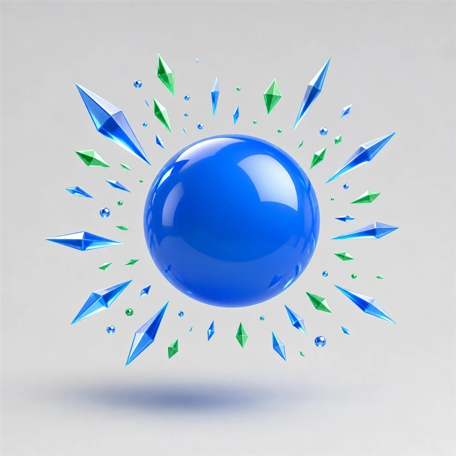
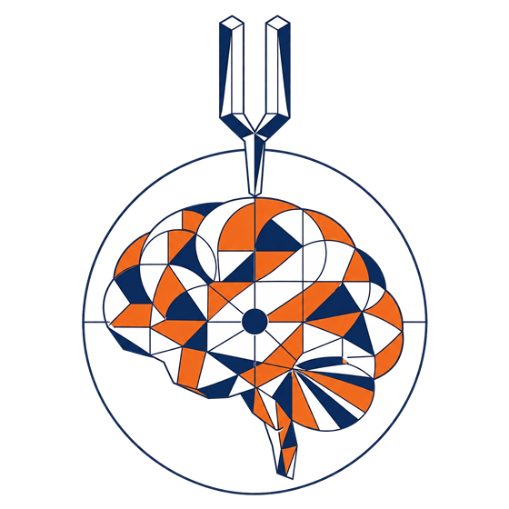
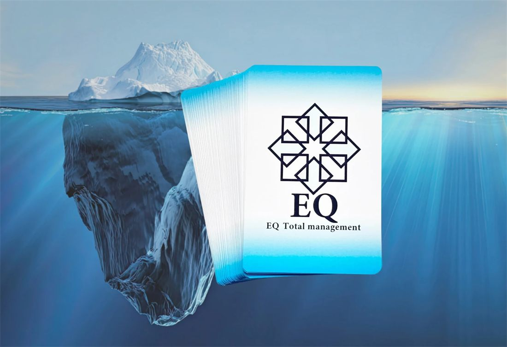
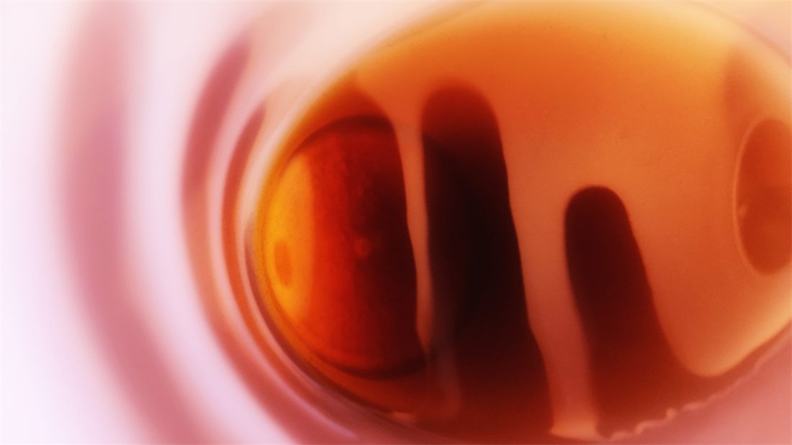
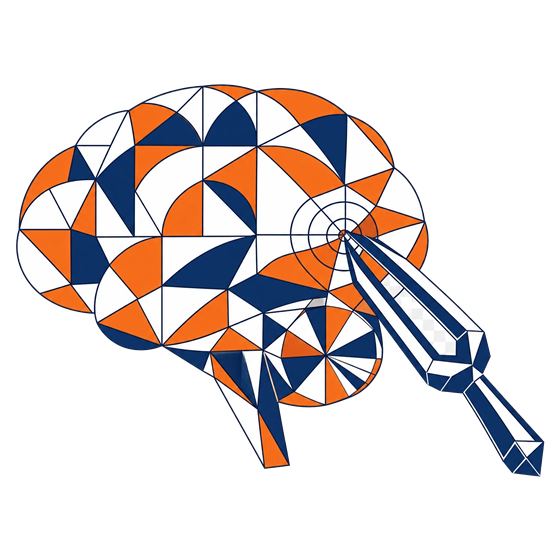
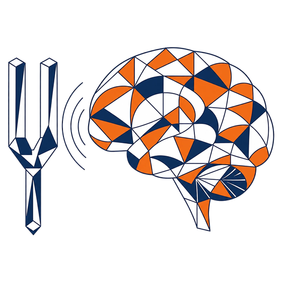
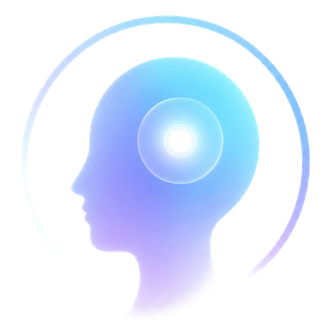
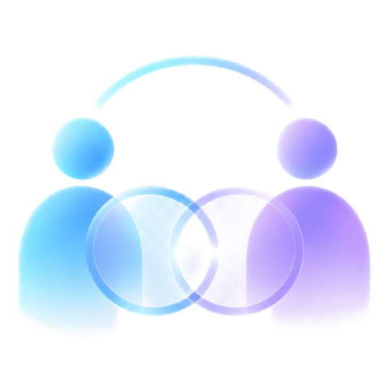
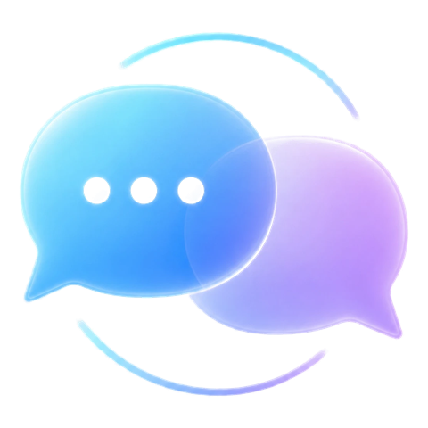

01
EQは、AI時代を
EQは、AI時代を
生きる術となる。
知識や作業をAIが担う時代に、人にしかできないのは「感じ、理解し、選ぶ」こと。EQは、その土台になる力です。
すべて無料で、自由に進められます。
株式会社Brifu ｜ EQ Platform の入口
Why EQ — なぜ、今EQなのか
EQ（Emotional Intelligence＝感情知能）は、自分と人の心を理解し、よりよい選択につなげる力。知らなかった人ほど、知った日から、見える景色が変わります。
知識や作業をAIが担う時代に、人にしかできないのは「感じ、理解し、選ぶ」こと。EQは、その土台になる力です。
感情に流された判断や、人間関係のすれ違い。仕事も人生も、リスクの多くは「人の心の動き」から生まれます。EQは、それに備える力です。
知識を増やすより先に、自分の見え方に気づくこと。気づいた瞬間から、変化は始まります。
今を変えたいと思う気持ち（向上心）が、EQを取り入れることで、人生に変革をもたらします。
What is EQ — EQとは何か
EQとは、Emotional Intelligenceの略で、日本語では「感情知能」と呼ばれています。一般的なEQでは、自分や相手の感情に気づき、その感情を理解し、適切に扱いながら、考え方や行動に活かしていく力として捉えられています。
01 ・ 気づく
まず、いまの自分の気持ちに気づくこと。すべてのはじまりです。
02 ・ 理解する
相手の立場に立って、その気持ちを思いやり、想像してみること。
03 ・ 選ぶ
感じたことを受けとめ、よりよい選択と行動につなげていくこと。
これらを理解し、より良い選択につなげていく力です。

株式会社Brifu ・ 無料
あなたは、どこから変えていく？
今の悩みから、あなたが今伸ばすとよいEQの力を見つけます。
3問（場合により4問）・1分ほど。点数はつけません。
Your First Step — はじめの一歩
はじまりは、みんな小さな興味から。心当たりのあるものは、ありませんか？



その小さな興味が、はじめの一歩です。まずは3分、自分の「見え方」を体験してみませんか。
Experience — 3つの体験
EQ（感情を理解し、活かす力）は、知識として覚えるより、自分の心で確かめたときに身につきます。EQ Gateには、すぐに始められる3つの体験があります。
The Filter — 同じ出来事、3つの見え方
朝、同僚に「おはようございます」と挨拶をした。
相手からの返事は、なかった。
この出来事を、3つのフィルターで見比べてみましょう。
① 状態認識（事実）
客観的に観察された、ありのままの事実を、そのまま捉えている状態。
挨拶をした。
返事は、なかった。
何かあったのかな？
「実際に起きたことは何か？」
人は「事実」ではなく、
「認識」を通して見た世界に反応している。
事実に戻る力と、認識を選び直す力。それが、質の高い人生をつくる鍵です。
Self-Awareness Work — 感情を感じるワーク
感情を感じるワーク気づく・受けとめる・自覚する
出来事・感情・思考・認識・自覚、そして大切にしていた価値観の順に、自分の言葉で書いてみましょう。書いた内容はこの画面の中だけで使われ、どこにも送信されません。

身体・感情・思考・行動など、「今の自分の状態」に気づく段階。無意識のままでは、変化は始まりません。

湧き上がる感情を、良い・悪いと判断せず、「大切な情報」として受けとめる段階。
感情の奥にある「認識」を客観的に見つめ、「自分はこう認識していたのか」と気づく段階。
STEP 1 — 状態認識
最近、心が動いた出来事を1つ思い出してください。うれしかったことでも、もやもやしたことでもかまいません。ここでは、見たこと・聞いたことの事実だけを書きます。
STEP 2 — 感情の受けとめ
その時、どんな感情が動きましたか？ 当てはまるものをすべて選んでください。良い・悪いはありません。感情は、認識を教えてくれる大切な情報です。
STEP 3 — 状態認識
その感情が動いた時、心の中で、どんな言葉をつぶやいていましたか？ できるだけ、そのまま書いてください。
STEP 4 — 認識
心の声の奥には、出来事への「意味づけ」があります。うれしい出来事にも、つらい出来事にも使える3つの問いです。
STEP 5 — 自覚
自覚とは、「自分はこのように認識していた」と、少し離れて見ることです。書いた言葉を、もう一度ながめてみましょう。
STEP 6 — 価値観
STEP 4で書いた「大切にしていたこと」に、いちばん近い価値観を1つ選んでください。EQコアカード®の8つの色につながっています。
感情が動いたら、この問いだけ思い出してください。「私は今、この出来事にどんな意味をつけているのだろう？」
EQ Core Card® — 実践ツール
53枚のEQコアカード®から、今の自分が意識したいことを1枚引いてみましょう。出たカードを見て、まず湧いた感情を、そのまま感じてください。
残り 53 枚
スワイプでカードを選ぶ・タップで引く
気づきノート
What Changes — EQを学べばどうなるか
EQを高めることで、人との関わり方や仕事での行動に変化が生まれることが研究されています。

自分の感情や考え方を客観的に捉えられる
相手の立場を理解しやすくなる
コミュニケーションや人間関係が変わるドラッグ・スワイプで回せます
単に「感情をコントロールする」のではなく、自分の認識を知り、育てることを大切にしています。
EQは、個人の成長だけでなく、企業の人材育成やリーダーシップにも活用されています。
感情知能を育てるプログラム「Search Inside Yourself」が社内で生まれました。マインドフルネスをベースに、自己認識・感情知能・共感などを学ぶプログラムで、その後、企業や大学などにも広がっています。
L'Oréal
販売職の採用に、感情的コンピテンシーを取り入れた選考を実施。従来の選考で採用された販売員と比べ、年間売上が1人あたり91,370ドル多く、初年度の離職率も63％低かったと報告されています。
FedEx Express
新任マネージャーを対象に、EQアセスメント・研修・コーチングを組み合わせた6か月間のリーダー育成プログラムを実施しています。
EQは、個人の「心の持ち方」だけの話ではありません。
人の認識が変われば、行動が変わる。
行動が変われば、人との関係や組織のあり方も変わっていく。
その変化を「認識」という視点から深く学んでいきます。
ドラッグ・スワイプで回せます
EQ Platform — ゲートの先にある道のり
EQ Gateは、株式会社Brifuの教育プラットフォーム「EQ Platform」の入口です。学び、気づき、育ち、実践し、やがて社会へ活かしていく。自分のペースで、次の一歩を選べます。
ここまでの体験は、すべて無料で完結しています。
ここから先は、目的や成長段階に合わせて、自由に選んでください。
※各ステージへの移行には、Brifuが定める受講条件・実践条件があります。